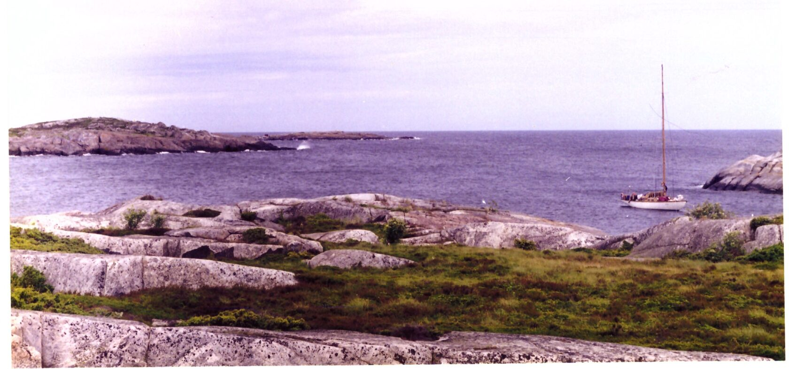

Наши происшествия
Случай №1. Яхта Урал. Опасная якорная стоянка
Июль 1998 года. Яхта «Урал» класса Л-6 Центрального яхт-клуба Санкт-Петербурга совершала плавание по маршруту Санкт-Петербург-Ханко-Стокгольм-Мариенхамн-Санкт Петербург. Экипаж – 6 человек (капитан, старпом и 4 матроса). Я участвовал в качестве матроса. Переход Санкт Петербург -Ханко прошел без особых происшествий. Из Ханко в Стокгольм лодка вышла вечером. Прогноз погоды не учитывался (скорее всего и не узнавался), мы спешили догнать в Стокгольме флотилию, участвующую в регате «Паруса Балтики». Усиление зюйд-веста ночью до 5-7 баллов и изношенное состояние парусов привело к выходу из строя всех трех гротов, имевшихся в наличии. Остался только штормовой грот (поставлен не был), штормовой стаксель и единственный новый стаксель №3.
Лодка пыталась лавировать в условиях крупной волны под этим стакселем. Лавировка получалась не круче галфинда. Более того, при сохранении ситуации была опасность сноса на скалы Аландского архипелага. Стационарный двигатель СМ в такой ситуации помочь не мог ни по мощности, ни по надежности. Команда укачалась через 15-20 часов и частично потеряла работоспособность. Палуба в лодке текла, все было мокрое, температура воздуха была не больше + 8-10 градусов. После довольно долгих колебаний и раздумий судоводителями было принято решение укрыться в районе маяка Svenska Högarna в Швеции (59º 26,6' N; 19º30,06' E).
Подробные бумажные карты этого района отсутствовали. Электронной навигации у нас тогда не было. Единственная GPS вышла из строя в начале плавания. Тем не менее, мы благополучно вошли в шхеры и встали на якорь. Место якорной стоянки было плохо защищено от волны. Якорный трос испытывал значительные рывки на волне. В одном кабельтове под ветром отчетливо виднелись буруны. Команда ушла отдыхать в каюту, оставив якорную вахту.
Примерно через час якорь быстро пополз, что заметила вахта и объявила аврал. Был извлечен из форпика и быстро отдан более тяжелый адмиралтейский якорь. Оба якоря пока удерживали лодку, но до бурунов по корме оставалось около полукабельтова. Характер грунта в этом месте – плита.
Ситуацию разрешило появление служителя маяка на катере, который буксировкой помог нам поднять якоря (наши физические силы были сильно истощены морской болезнью) и оттащил лодку в спокойное место на стационарный буй (рисунок 1).

Экипаж получил возможность отдохнуть. Суровый на вид, молчаливый швед подарил нам атлас местного шхерного района. Примерно через сутки или двое (это уже не помню) ветер ослаб и «Урал» продолжил плавание в Стокгольм.